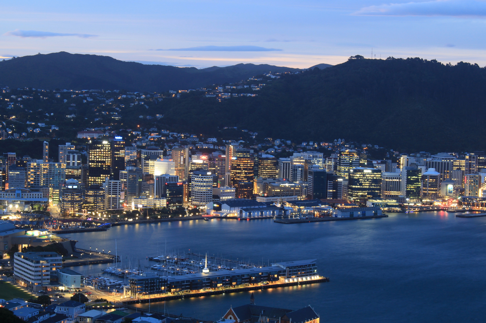
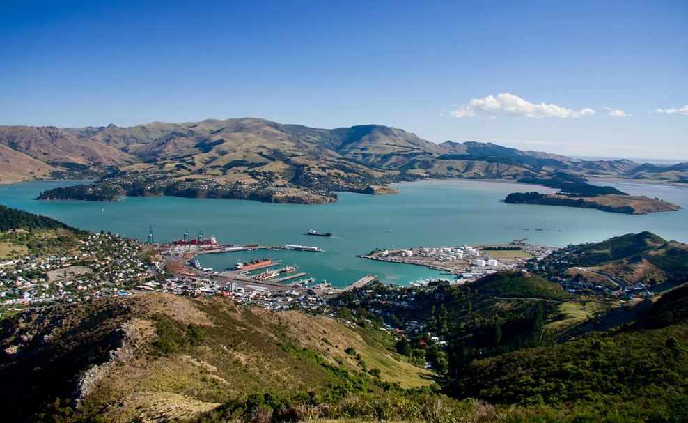
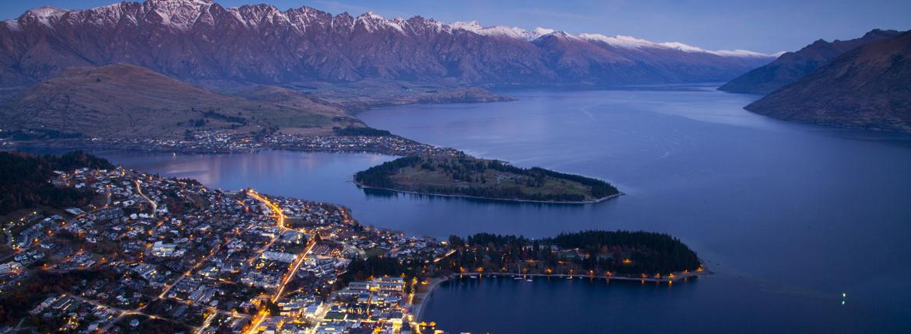
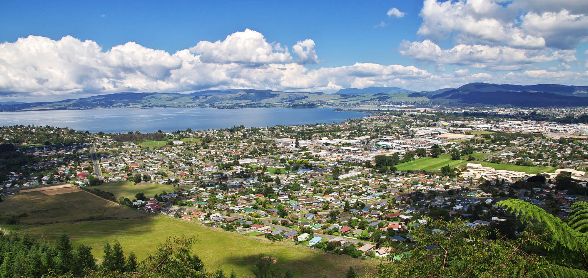
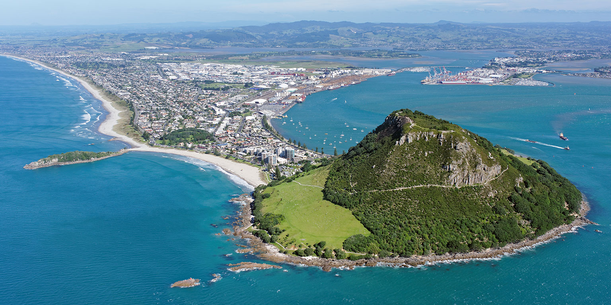

-

- 
- 
- 
- 
- 
Ciudades

Auckland
Auckland es la ciudad más grande de Nueva Zelanda, situada en la Isla Norte. Fue capital del país hasta 1865, cuando fue sustituida por Wellington, y constituye el núcleo de las actividades comerciales y de negocios del país.
MAS
Wellington
Denominada Te Whanganui-a-Tara por los maoríes es la capital de Nueva Zelanda. Se encuentra ubicada en el extremo sur de la Isla Norte en plena bahía Port Nicholson, rodeada de montañas Rimutaka. Es la segunda ciudad más grande de Nueva Zelanda, por detrás de Auckland.
MAS
Christchurch
Christchurch, conocida por su herencia inglesa, se ubica en la costa este de la Isla Sur de Nueva Zelanda. Chalanas de fondo plano se deslizan por el río Avon, que serpentea por el centro de la ciudad.
MAS
Queenstown
Queenstown, Nueva Zelanda, se encuentra en las costas del lago Wakatipu en la Isla Sur, ubicada junto a los Alpes del Sur. Conocida por los deportes de aventura, es también una base para explorar los viñedos y las ciudades mineras históricas de la región.
MAS
Rotoura
Rotorua, una ciudad ubicada en el lago del mismo nombre en la Isla Norte de Nueva Zelanda, es famosa por su actividad geotérmica y cultura maorí. En el valle Whakarewarewa de Te Puia, hay piscinas de lodo burbujeante y el géiser Pohutu de 30 m de alto, que hace erupción varias veces al día.
MAS
Tauranga
Tauranga es la mayor ciudad de Bay of Plenty, en la costa este de la Isla Norte de Nueva Zelanda. Se encuentra a 105 km de Hamilton y a 85 km al norte de Rotorua. Tauranga es la ciudad que más ha crecido de Nueva Zelanda en las últimas décadas, y ahora es la novena ciudad más grande del país
MAS